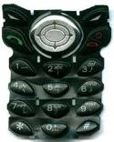
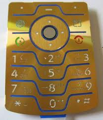
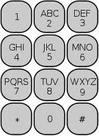
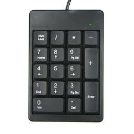
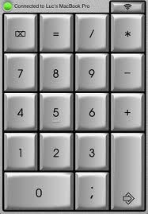

Shakshat Virtual Lab 
INDIAN INSTITUTE OF TECHNOLOGY GUWAHATI
Mobile Keypad Design - Size, Layout and Bevilling
The layout of a mobile keypad is very important when performing tasks like sending SMS or using a PDA phone. Basic numeric keypad in conjunction with T9 is efficient for typing SMS text messages but for sending emails you may need to look for a cell-phone with a QWERTY keypad with keys properly spaced and large enough to operate with both thumbs.
Some keypads may look good but are very difficult to use. Tiny keys look cool but may be an ergonomic nightmare. The best keypads have sufficient spacing between keys and pressing the keypad gives a positive haptic feedback. Some keys are very close to each other with a raised portion in the middle which is called bevilling. This allows your finger to feel each key which is required for properly using the keys.
In this experiment we will only study numeric keypad layout designs.
Observe the mobile keypads shown below
|  |  |
 |  |
Do you observe any pattern? The location and sequence of keys are same in all layouts irrespective of their look and feel. Why is this pattern so popular? Is this a standard pattern? What would happen if we rearrange the keys into different positions?
Look at these numeric keypads used in industrial products
 |
 |
 |  |
Did you notice that the sequence of rows is reversed with 7, 8 and 9 now at the top? Is this keypad as easy to use as the other one staring with 1, 2 and 3 at the top? What would be your answer? Find out by conducting this experiment.
The layout of a numeric keypad plays a vital role while inputting information. The ease of use, retention in memory, physical stress and error probability are some factors governing this layout.
This experiment will expose you to four different types of layouts. You will be interacting with each of them and finding the speed of entering a mobile number. At the end of the experiment you can infer on the best possible keypad layout configuration that facilitates error-free entry without having to sacrifice ease of use.